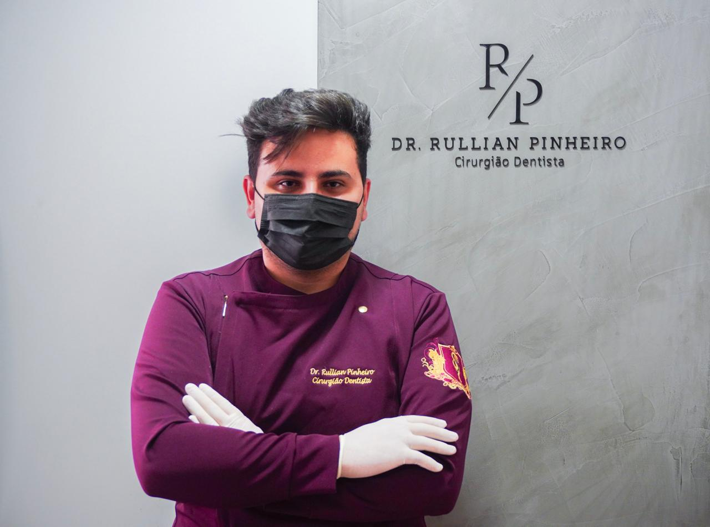
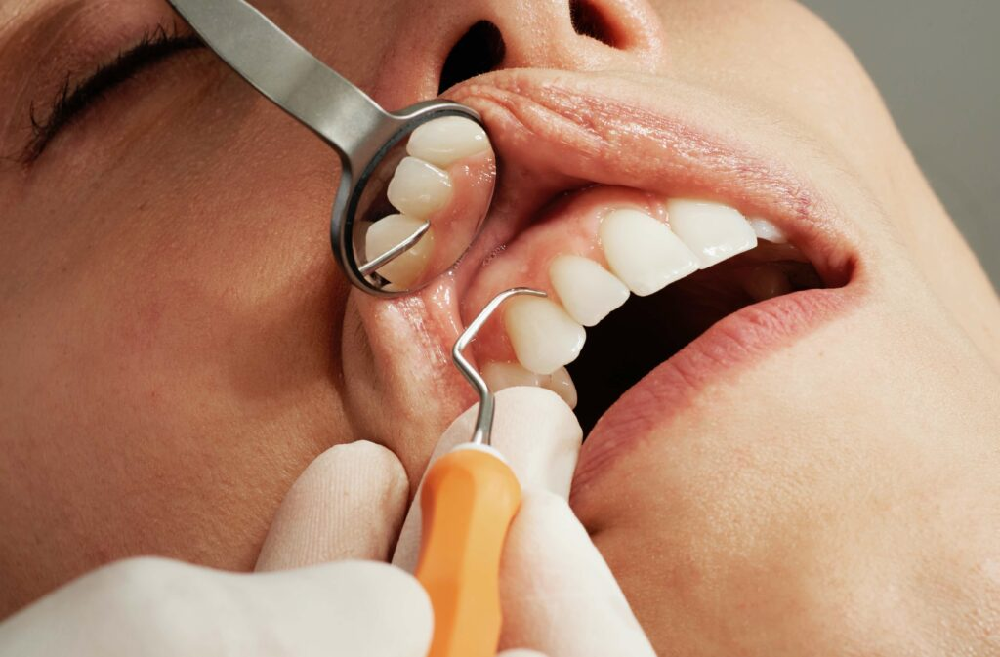
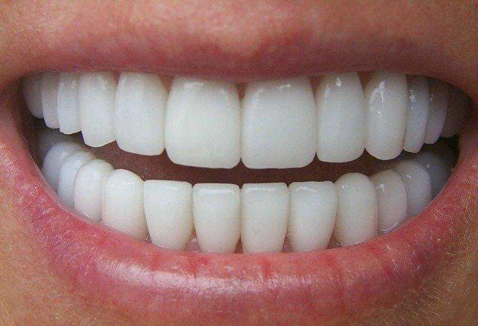

Nosso Consultório
Um ambiente moderno, acolhedor e equipado com tecnologia de ponta, pensado para oferecer conforto e segurança em cada atendimento.


Cirurgião-dentista no bairro Bigorrilho, em Curitiba. Ofereço serviços como:
Minha clínica possui estrutura moderna com Raio-X no local, garantindo diagnóstico rápido e total conforto, sem necessidade de deslocamento para exames.
ATENDIMENTO DE EMERGÊNCIA 24H: Para sua segurança e um atendimento mais eficaz, é necessário contato prévio por telefone. Ligue antes de se dirigir ao consultório para que eu possa compreender o caso e me preparar para recebê-lo(a) da melhor forma.
Ao longo de mais de 4 anos de experiência nas áreas de Endodontia, Prótese Dentária e Cirurgia, o Dr. Rullian Pinheiro tem se dedicado a transformar sorrisos e aliviar dores, sempre com paixão, precisão e profissionalismo.
Sua trajetória é marcada por um compromisso constante com a excelência. Ao se aprofundar na Endodontia, o Dr. Rullian aprimorou suas técnicas e se manteve atualizado com as mais recentes inovações da odontologia moderna. Esse cuidado se reflete em seu consultório — um espaço moderno, acolhedor e equipado com tecnologia de ponta, ideal para oferecer tratamentos de alta qualidade.
Atualmente, o Dr. Rullian está ampliando seus conhecimentos com especialização em Implantodontia e Reabilitação Oral, fortalecendo ainda mais sua atuação na restauração funcional e estética dos sorrisos de seus pacientes.
Mais do que realizar procedimentos, o Dr. Rullian acredita que cuidar do sorriso é cuidar da pessoa como um todo, garantindo resultados duradouros, naturais e cheios de confiança.
Cuidado rápido e especializado em urgências dentárias. Problemas dentários acontecem de repente — e aqui você encontra atendimento imediato.
Seu sorriso cuidado com rapidez e atenção especializada.
Para sua emergência dentária, conte com suporte rápido e eficiente.
Um ambiente moderno, acolhedor e equipado com tecnologia de ponta, pensado para oferecer conforto e segurança em cada atendimento.
Especializado nas principais áreas da odontologia moderna, oferecendo tratamentos completos com tecnologia de ponta, precisão e cuidado humanizado para garantir sua saúde bucal e bem-estar.
Tratamentos de canal com precisão e tecnologia moderna para preservar dentes e aliviar dores.
Reabilitação estética e funcional através de próteses personalizadas e de alta durabilidade.
Procedimentos seguros e minimamente invasivos para extrações e implantes dentários.
Substituição de dentes perdidos com pinos de titânio e coroas estéticas, devolvendo função mastigatória e harmonia facial.
Sempre pronto para atender a sua emergência dentária e cuidar do seu sorriso com precisão, conforto e atenção.

Remoção de placa bacteriana e tártaro para manter dentes e gengivas saudáveis, prevenindo inflamações e mau hálito.

Técnica segura e eficaz que devolve o branco natural dos dentes, deixando seu sorriso mais iluminado e confiante.

Lâminas ultrafinas aplicadas sobre os dentes para corrigir forma, cor e pequenas imperfeições de maneira natural.
Cuidar dos dentes é cuidar da saúde como um todo. Aqui, cada tratamento é pensado para proporcionar conforto, segurança e resultados duradouros. O Dr. Rullian Pinheiro une experiência, tecnologia e empatia para garantir o melhor atendimento possível.
Mais de 4 anos de experiência em urgências e tratamentos odontológicos completos.
Emergências tratadas com prioridade e cuidado desde o primeiro contato.
Equipamentos modernos e avaliações precisas para diagnósticos e soluções eficientes.
Atendimento humanizado, com foco no conforto e na tranquilidade de cada paciente.
Veja a transformação real de pacientes que confiaram no Dr. Rullian Pinheiro. Cada sorriso recuperado é uma história de confiança, dedicação e excelência em tratamento odontológico.
Paciente compartilha sua experiência com o tratamento realizado.
Veja o antes e depois de um tratamento odontológico completo.
Depoimento sobre o atendimento e resultados alcançados.
Quer fazer parte desta história?
Agende sua consulta e transforme seu sorriso também!
A satisfação dos pacientes é o reflexo de um atendimento feito com empatia, técnica e dedicação.
"Excelente profissional! Fui muito bem atendida, com explicações claras e cuidado em cada detalhe. Recomendo de olhos fechados."
"Atendimento impecável, ambiente limpo e moderno. O Dr. Rullian transmite muita confiança e profissionalismo."
“Senti que realmente me escutou e explicou todas as etapas do tratamento. Resultado incrível, muito feliz!”